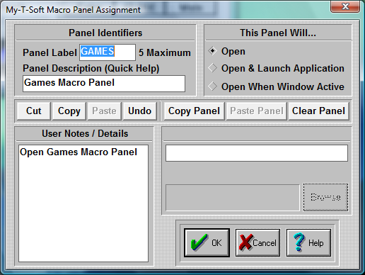

| My-T-Soft®: for Windows; Indestructible Keyboards and Indispensable Utilities; Version 1.80; User's Guide | ||
|---|---|---|
| Prev | Next | |

When you click on the top button of a Macro Panel in My-T-Soft Setup, you may edit the Panel settings for the current Macro Panel.
Panel Label
Enter a panel label. This label will appear on the top key in the Macro Panel.
Enter a panel description. The panel description will appear in the Quick Help bar, if it is open.
This panel will...
Open
Click on this Radio-Button if you want to open this Macro Panel. This means no additional action will occur when the panel is opened.
Open and launch Application
Click on this Radio-Button if you want to assign an application to this Macro Panel. Enter the application name and path in the edit box below (Application), or press Browse to select an application. You may also enter a Working Directory that will become the current directory when the Application is launched. When accessed, the panel will open & then automatically launch the application.
Open When Window Active
Click on this Radio-Button if you want your Macro Panel to be open as soon as the application is opened. Enter the application name in the edit box below Window Name, or press Select to choose from currently active windows. You MUST take the Window name from the caption bar of your application. It MUST appear exactly as on the caption bar. For example, the caption bar title for this help file is "Macro Panel Dialog Box". The name entered should not have information including a current file name, or open document. You may also shorten the name to provide additional functionality. For example, if you enter the name as "Word", the Macro Panel will automatically enter when the Microsoft Word, WordPad, or WordPerfect is active.
Note: Because of the system memory required for this operation and constant monitoring, it will affect the system speed!
User Notes / Details
You may enter helpful information, notes, or details regarding the settings for this panel. This is only used for reference and to appear on the Panel Documentation.
Cut, Copy, Paste, Undo
These shortcut keys may be used to manipulate the text. This may help you enter information & interact with other Windows applications.
Copy Panel, Paste Panel, Clear Panel
These shortcut keys may be used to manipulate & operate within My-T-Soft Setup / Panel Editing. For example, you could Copy Panel information from an existing panel to be pasted into a newly created panel.
Click on the OK Button to save the current options.
Click on the CANCEL button to Close the Dialog & cancel any changes.